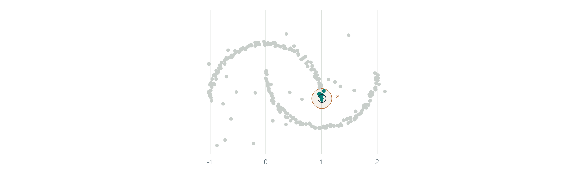
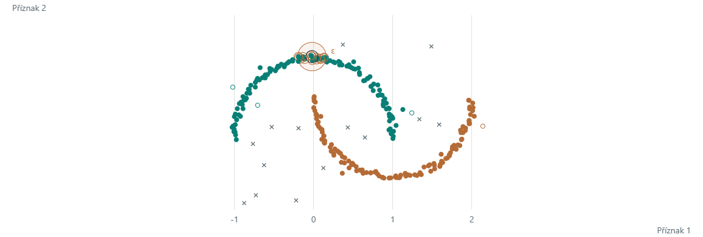
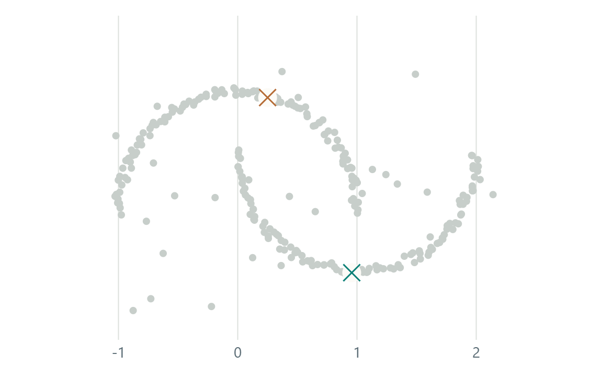
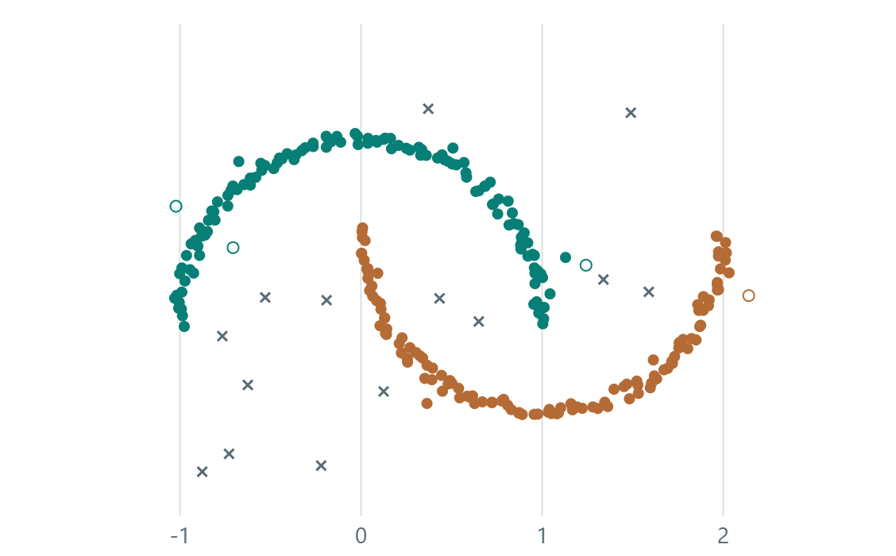
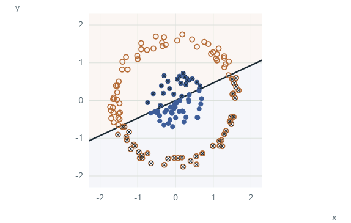
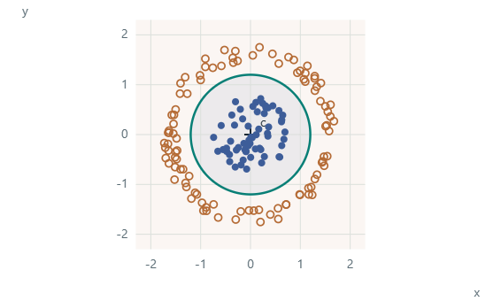
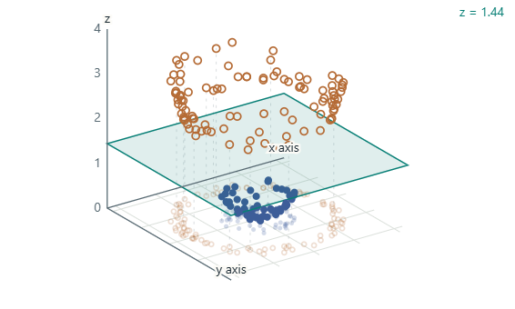
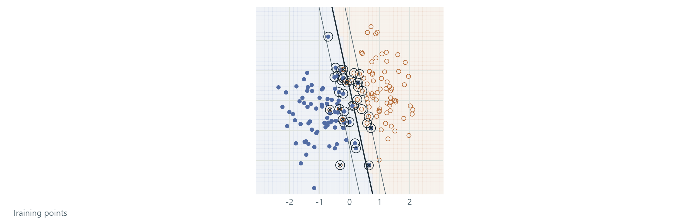
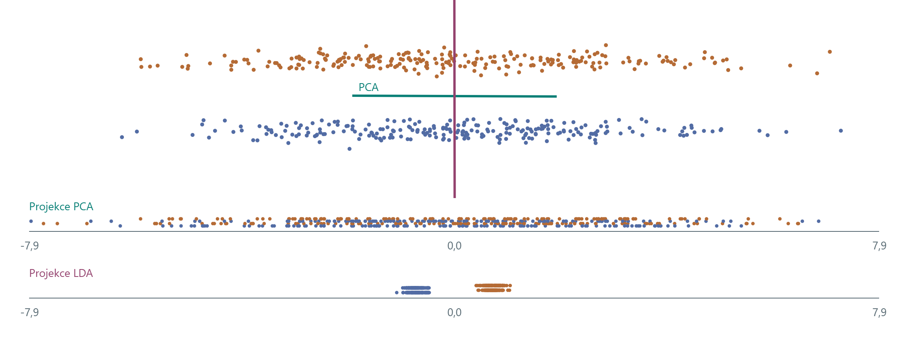
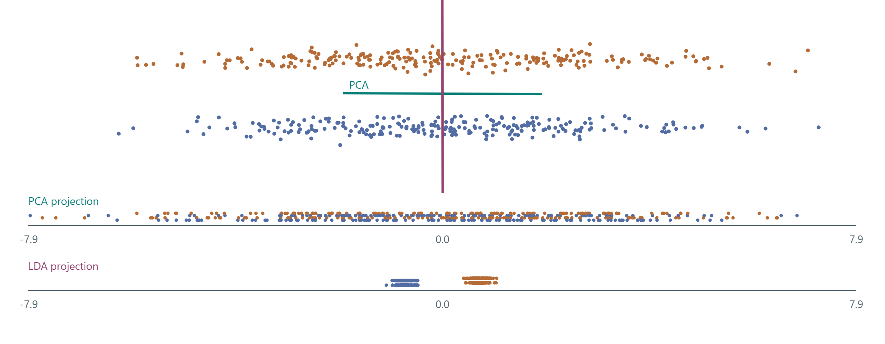

NI-ROZ / ANI-ROZ · CvičeníTutorial 2
Shlukování a klasifikaceClustering and classification
Od okolí jednoho bodu k rozhodování o nových vzorcích.From a point’s neighbourhood to decisions about new observations.
90 minut · česky a anglicky · všechny ukázky fungují bez přihlášeníminutes · Czech and English · no sign-in required
- DBSCAN: okolí, jádrové body, okraje a šum; porovnání s K-means.DBSCAN: neighbourhoods, core points, borders and noise; compare with K-means.
- 1-NN a SVM: vzdálenost, příznaky, margin a hyperparametry.1-NN and SVM: distances, features, margins and hyperparameters.
- Trénink, validace, test a matice záměn.Training, validation, testing and a confusion matrix.
U každého klikátka nejprve odhadněte výsledek změny. Pak změňte jeden parametr a vysvětlete, co se stalo.For each interactive example, predict the effect first. Then change one parameter and explain the result.
DBSCAN krok za krokemDBSCAN step by step
Stejných 264 bodů jako v další ukázce. Nejprve prohlédněte okolí, potom sledujte, které body dovolí shluku růst.The same 264 points as in the next example. First inspect a neighbourhood, then follow the points that let a cluster grow.


Vysvětlení: Hustota a růst shlukuExplanation: Density and cluster expansion
Představte si kruh kolem vybraného bodu. Jeho poloměr je ε. Pokud kruh obsahuje alespoň min_samples bodů včetně vybraného bodu, tento bod je jádrový. Z jádrového bodu se můžeme přes další jádrové body dostat i do zakřiveného shluku.Imagine a circle around a selected point. Its radius is ε. If it contains at least min_samples points, including the selected point, that point is a core point. Connecting core points allows a cluster to follow a curved shape.
Okrajový bod je blízko jádrového bodu, ale sám nemá dost sousedů. Do shluku se připojí, jeho prostřednictvím však růst nepokračuje. Body, ke kterým se takto žádný shluk nedostane, zůstanou šumem.A border point lies near a core point but has too few neighbours of its own. It joins a cluster without carrying expansion further. Points that no cluster reaches remain noise.
První krok dovoluje vybrat ukázkový jádrový, okrajový či šumový bod. Druhý krok prochází jádrové body prvního shluku v pořadí skutečného výpočtu. Posuvník říká, kolik jader už jsme zpracovali. Šedé body v tomto kroku ještě neoznačujeme za šum. Teprve třetí krok ukazuje výsledek celého DBSCAN.Step one lets you inspect an example core, border or noise point. Step two visits the first cluster’s core points in the actual computation order. Its slider counts processed cores. Grey points at this stage are not yet classified as noise. Step three shows the complete DBSCAN result.
DBSCAN v ruceDBSCAN by hand
Barvy ukazují nalezené shluky. Kliknutím na bod zkontrolujete jeho okolí a počet sousedů.Colours show the clusters found. Click a point to inspect its neighbourhood and neighbour count.

Klikněte na bod. Kruh ukazuje ε-okolí a počet zahrnuje i vybraný bod. Jak velké ε sloučí oba shluky?Click a point. The circle shows its ε-neighbourhood, counting the point itself. How large must ε be to merge both clusters?
Pseudokód: DBSCAN: okolí a růst shlukůPseudocode: DBSCAN: neighbourhoods and cluster expansion
Vstupem jsou body, poloměr ε > 0 a kladné celé min_samples. Okolí zahrnuje všechny body ve vzdálenosti nejvýše ε, včetně bodu samotného.Input is the point set, radius ε > 0 and positive integer min_samples. A neighbourhood includes all points at distance at most ε, including the point itself.
Pro každý bod i:
Nᵢ ← jeho ε-okolí včetně něj samotného
jádro[i] ← počet bodů v Nᵢ ≥ min_samples
Všechny štítky ← NEPROZKOUMÁNO
Pro každý bod i v daném pořadí:
Pokud už má štítek, přeskoč ho
Pokud není jádro: štítek[i] ← ŠUM; pokračuj
Založ nový shluk c a přiřaď do něj i
fronta ← [i]
Dokud fronta není prázdná:
p ← odeber první bod z fronty
Pro každý bod q v Nₚ:
Pokud štítek[q] = NEPROZKOUMÁNO:
štítek[q] ← c
Pokud jádro[q]: přidej q do fronty
Jinak pokud štítek[q] = ŠUM:
štítek[q] ← c
Vrať štítky, jádrové body a počtyFor each point i:
Nᵢ ← its ε-neighbourhood, including itself
core[i] ← number of points in Nᵢ ≥ min_samples
All labels ← UNVISITED
For each point i in the given order:
If it already has a label, skip it
If not core: label[i] ← NOISE; continue
Start a new cluster c and assign i to it
queue ← [i]
While the queue is not empty:
p ← remove the first point from the queue
For each point q in Nₚ:
If label[q] = UNVISITED:
label[q] ← c
If core[q]: append q to the queue
Else if label[q] = NOISE:
label[q] ← c
Return labels, core points and countsDo fronty se dostávají pouze jádrové body. Dříve označený šum se může stát okrajovým bodem shluku. Sporné okrajové body může pořadí průchodu přiřadit různě. Šedé body během animace prvního shluku ještě nepředstavují konečný šum.Only core points enter the queue. A point previously labelled noise can become a cluster border point. Traversal order can change the assignment of ambiguous border points. Grey points during the first cluster’s animation are not final noise labels.
Vysvětlení: Jak číst DBSCANExplanation: How to read DBSCAN
ε určuje, jak daleko od sebe ještě body považujeme za sousedy. min_samples určuje potřebný počet bodů v tomto okolí. Počet shluků zadávat nemusíme. Při větším ε se shluky mohou spojit, při příliš malém ε může mnoho bodů zůstat šumem.ε sets the maximum distance for neighbours. min_samples sets the required count in that neighbourhood. We do not supply a cluster count. A larger ε can merge clusters. A very small ε can leave many points as noise.
Plný bod je jádrový, prázdný kroužek okrajový a křížek je šum. Zde jsou barvy výsledkem shlukování. Šum automaticky neznamená chybné měření ani špatnou odpověď. Záleží na účelu analýzy.A filled point is core, a hollow circle is border, and a cross is noise. Here colours are clustering results. Noise does not automatically mean a measurement error or a wrong answer. Its meaning depends on the analysis.
K-means a DBSCANK-means and DBSCAN
Stejné body, jiná představa shluku. K-means hledá blízkost ke středům, DBSCAN propojené husté oblasti.The same points, different notions of a cluster. K-means uses distance to centres; DBSCAN connects dense regions.




Kříž ve středu označuje centroid. Křížek u DBSCAN označuje šum. Barvy jsou nalezené skupiny, ne správné třídní odpovědi. SSE je součet čtverců vzdáleností bodů od přiřazených středů.A cross at a centre marks a centroid. DBSCAN crosses mark noise. Colours represent discovered groups, not true class answers. SSE is the sum of squared distances to assigned centres.
Pseudokód: K-means: přiřazení a nové středyPseudocode: K-means: assignment and updated centres
Vstupem jsou body a počet k. Počáteční středy vybíráme z k různých bodů pomocí uloženého seedu.Input is the points and cluster count k. A saved seed selects k different points as initial centres.
Zvol k různých počátečních středů
Opakuj:
Přiřaď každý bod k nejbližšímu středu
Pokud se přiřazení nezměnilo: skonči
Každý střed přesuň do průměru své skupiny
Pro prázdnou skupinu ponech původní střed
Vrať přiřazení a středyChoose k distinct initial centres
Repeat:
Assign each point to its nearest centre
If assignments did not change: stop
Move each centre to its group mean
For an empty group, keep its previous centre
Return assignments and centresKlikátko uchovává snímek po přiřazení i po přesunu středů. Vzdálenost je eukleidovská; přiřazení porovnává její čtverec. Omezujeme výpočet na 60 iterací. Změna počátečních středů může vést k jinému lokálnímu řešení.The example records a frame after assignment and after updating centres. Distance is Euclidean; assignment compares squared distances. We cap computation at 60 iterations. Changing initial centres can lead to a different local solution.
Vysvětlení: Středy a hustotaExplanation: Centres and density
K-means začíná k zvolenými středy. Jeden krok přiřadí každý bod k nejbližšímu středu. Další krok přesune každý střed do průměru jeho skupiny. Tím klesá nebo zůstává stejný součet čtverců vzdáleností SSE. Výsledek může záviset na počátečních středech.K-means starts with k selected centres. One step assigns every point to its nearest centre. The next moves each centre to its group mean. This decreases or preserves the sum of squared distances, SSE. The result can depend on initial centres.
DBSCAN na stejných bodech používá ε-okolí a min_samples = 6. Počet shluků předem nevolíme. Tvar zakřivených hustých oblastí může zachovat lépe než dělení podle nejbližších středů. Výsledek posuzujte vzhledem k účelu, metrice a parametrům. Barvy samy neříkají, zda je shluk správně.On the same points, DBSCAN uses ε-neighbourhoods and min_samples = 6. We do not choose a cluster count in advance. It can preserve curved dense regions better than nearest-centre partitions. Judge the result against the task, distance measure and parameters. Colours alone do not establish a correct clustering.
Od vzdálenosti ke klasifikátoruFrom distance to a classifier
Nyní mají vzorky i známou třídu: A, B patří do třídy 0; C, D do třídy 1. Jednosousedový klasifikátor 1-NN přidělí novému bodu třídu nejbližšího trénovacího vzorku.The observations now also have known labels: A and B are class 0; C and D are class 1. A one-nearest-neighbour classifier, 1-NN, assigns a new point the label of its closest training sample.
Hvězda je nový vzorek. Její polohu mění kliknutí nebo šipky. Graf zůstává v původních jednotkách; zaškrtnutí mění váhu druhého příznaku při výpočtu vzdálenosti.The star is the query sample. Move it by clicking or using arrow keys. The plot stays in the original units; the checkbox changes the second feature's weight in the distance calculation.
d₁(x, q) = Σⱼ |xⱼ − qⱼ|
Štítek odhadnutý klasifikátorem není ground truth nového bodu. Bez jeho skutečného štítku z této ukázky nemůžeme spočítat testovací úspěšnost. Při shodné vzdálenosti zde rozhoduje pořadí A–D.A predicted class is not the query's ground truth. Without its true label, this example cannot provide test accuracy. Distance ties here use the fixed order A–D.
Změna příznaků a hranice třídFeatures and a class boundary
Původní příznakyOriginal features
Podaří se přímkou oddělit vnitřní body od prstence?Can a straight line separate the inner points from the ring?
Otáčejte a posouvejte přímku. Křížky označují chyby aktuálního rozdělení. Barvy bodů dál ukazují skutečné třídy.Rotate and move the line. Crosses mark the current classification errors. Point colours still show the true classes.
Potom zkuste druhou záložku. Body zůstanou stejné, změníme jejich popis.Then try the second tab. The points stay the same. We change their representation.
160 syntetických bodů. Hranice nastavujete ručně, SVM se zde netrénuje. Počet chyb popisuje jen zobrazené body.160 synthetic points. You set these boundaries manually. This example does not fit an SVM. Error counts describe only the displayed points.
Kružnice v původním prostoruCircle in the original space
Rovina v prostoru s novým příznakemPlane in the expanded feature space
Vlevo kliknutím nebo tažením posuňte střed kružnice. Vpravo tažením otáčejte pohled. Výška roviny mění stejné rozdělení v obou grafech. Na klávesnici použijte šipky po zaměření grafu.Click or drag on the left to move the circle centre. Drag on the right to rotate the view. Plane height changes the same classification in both plots. After focusing a plot, use the arrow keys.
Jaký příznak jsme přidali?Which feature did we add?
Zvolíme střed c = (cₓ, cᵧ). Nový příznak z je druhá mocnina vzdálenosti od tohoto středu. h označuje výšku roviny.Choose a centre c = (cₓ, cᵧ). The new feature z is squared distance from that centre. h is the plane height.
z = h ⇔ (x − cₓ)² + (y − cᵧ)² = h, r = √h
Zobrazení (x, y) do (x, y, z) je explicitní změna příznaků. Vodorovná rovina tak dává kružnici v původním prostoru. Jde o konkrétní geometrický příklad, nikoli obecný výpočet RBF kernelu.Mapping (x, y) to (x, y, z) explicitly changes the features. A horizontal plane then gives a circle in the original space. This is a specific geometric example, not the general computation of an RBF kernel.
160 syntetických bodů. Hranice nastavujete ručně, SVM se zde netrénuje. Počet chyb popisuje jen zobrazené body.160 synthetic points. You set these boundaries manually. This example does not fit an SVM. Error counts describe only the displayed points.



Výchozí příklad: střed (0, 0), výška roviny 1,44. Kružnice a rovina oddělují stejné body.Default example: centre (0, 0), plane height 1.44. The circle and the plane separate the same points.
160 syntetických bodů. Hranice nastavujete ručně, SVM se zde netrénuje. Počet chyb popisuje jen zobrazené body.160 synthetic points. You set these boundaries manually. This example does not fit an SVM. Error counts describe only the displayed points.
Pseudokód: Nový příznak a ručně nastavená hranicePseudocode: A new feature and a manually chosen boundary
Vstupem jsou body (x, y), zvolený střed (cₓ, cᵧ) a výška roviny h > 0. Skutečné třídní štítky používáme jen k vyhodnocení chyb.Input is the points (x, y), chosen centre (cₓ, cᵧ), and plane height h > 0. True class labels are used only to count errors.
Pro každý bod (x, y):
z ← (x − cₓ)² + (y − cᵧ)²
Nový_bod ← (x, y, z)
Pokud z < h: predikce ← vnitřní třída
Jinak: predikce ← vnější třída
Počet_chyb ← počet predikcí odlišných od skutečné třídy
Ve 2D nakresli kružnici s poloměrem √h
Ve 3D nakresli stejné body a rovinu z = h
Při otáčení kamery změň pouze zobrazeníFor each point (x, y):
z ← (x − cₓ)² + (y − cᵧ)²
New_point ← (x, y, z)
If z < h: prediction ← inner class
Otherwise: prediction ← outer class
Error_count ← predictions different from the true class
In 2D, draw a circle with radius √h
In 3D, draw the same points and plane z = h
When rotating the camera, change only the viewTento postup odpovídá našemu klikátku. Hranici nastavujeme ručně, neoptimalizujeme margin a netrénujeme SVM. Explicitně počítaný příznak z není obecný RBF kernel.This procedure matches our interactive example. We set the boundary manually, without optimizing a margin or fitting an SVM. The explicitly computed feature z is not a general RBF kernel.
Vysvětlení: Příznak, hranice a pohledExplanation: Feature, boundary and view
Barva bodu zde označuje známou skutečnou třídu. Křížek označuje chybu právě nastavené hranice. To se liší od DBSCAN, kde barva označovala nalezený shluk a křížek šum.Here a point colour marks its known true class. A cross marks an error made by the current boundary. This differs from DBSCAN, where colour marked a discovered cluster and a cross marked noise.
Ve druhé záložce přidáváme číslo popisující druhou mocninu vzdálenosti od zvoleného středu. Tím se body zvednou do 3D. Výška roviny určuje stejné rozdělení jako kružnice vlevo. Posun středu mění nový příznak. Otáčení kamery mění pouze pohled.The second tab adds a number: squared distance from a chosen centre. This lifts the points into 3D. Plane height defines the same classification as the circle on the left. Moving the centre changes the new feature. Rotating the camera only changes the view.
Hranici v této ukázce řídíte ručně. SVM by ji hledalo optimalizací. Samotné zvednutí bodů nevysvětluje celý algoritmus SVM ani obecný RBF kernel.You control the boundary manually here. An SVM would find a boundary through optimization. Lifting points alone does not explain the whole SVM algorithm or a general RBF kernel.
SVM: margin a podpůrné vektorySVM: margin and support vectors
Zde už hranici hledá skutečné SVM. Zkuste změnit C, přepnout kernel a u RBF změnit γ. Kroužky kolem trénovacích bodů označují podpůrné vektory.Here a real SVM fits the boundary. Change C, switch the kernel, and adjust γ for RBF. Rings around training points mark support vectors.

C řídí kompromis mezi širším marginem a penalizací trénovacích chyb. Vyšší γ u RBF znamená lokálnější vliv bodu. Plná čára je hranice, přerušované čáry jsou úrovně ±1. U lineárního SVM mají přímou interpretaci geometrického marginu.C controls the trade-off between a wider margin and penalizing training errors. Larger RBF γ gives each point a more local influence. The solid line is the boundary; dashed lines are levels ±1. For linear SVM, these directly describe the geometric margin.
32 modelů bylo předpočítáno pomocí scikit-learn SVC, vždy pouze na trénovací části. Ovládáním mezi nimi přepínáte. Odložené body slouží k demonstraci generalizace; jejich opakované prohlížení nenahrazuje závěrečný nezávislý test.32 models were precomputed with scikit-learn SVC, each using training points only. The controls select among them. Held-out points illustrate generalization; repeatedly inspecting them does not replace a final independent test.
Pseudokód: SVM: učení a použití modeluPseudocode: SVM: fitting and applying a model
Tento postup učí skutečné SVM. Výběr parametrů oddělujeme od závěrečného testování.This procedure fits an actual SVM. Parameter selection is separate from final testing.
Odděl trénovací, validační a závěrečnou testovací část
Pro zvolený kernel a kandidáty C, případně γ:
Nauč SVC pouze na trénovací části
Parametry posuzuj na validační části
Po volbě parametrů uchovej naučený model
Pro nový bod x:
f ← rozhodovací funkce naučeného modelu
Pokud f(x) > 0: předpověz třídu 1
Jinak: předpověz třídu 0
Závěrečný test použij až pro konečné vyhodnoceníSeparate training, validation and final test data
For the chosen kernel and candidate C, optionally γ:
Fit SVC on the training part only
Assess parameters on the validation part
After selecting parameters, keep the fitted model
For a new point x:
f ← decision function of the fitted model
If f(x) > 0: predict class 1
Otherwise: predict class 0
Use the final test only for final evaluationU naší ukázky jsou jednotlivé modely předpočítané v Pythonu a přepínače vybírají jeden z nich. Odložené body jsou ilustrační kontrola; tento přehled nemá další nedotčený závěrečný test. Podpůrné vektory a chyby pocházejí ze skutečného SVC.Our example precomputes each model in Python and its controls select one. Held-out points provide an illustrative check; this demonstration has no further untouched final test. Support vectors and errors come from the actual SVC.
Vysvětlení: Naučené SVM a generalizaceExplanation: Fitted SVM and generalization
Na rozdíl od ruční geometrie na slidu 4 zde používáme skutečné modely SVC. Jsou naučené pouze na trénovacích bodech. Ovládání přepíná 32 předpočítaných kombinací datasetu, kernelu, C a γ. Kroužky zvýrazňují skutečné podpůrné vektory vrácené modelem.Unlike the manual geometry on slide 4, this example uses real SVC models. They are fitted on training points only. Controls select among 32 precomputed combinations of dataset, kernel, C and γ. Rings highlight the actual support vectors returned by the model.
Rozhodovací funkce f(x) určuje třídu podle znaménka. Hranice je f(x) = 0. U lineárního modelu jsou f(x) = ±1 dvě rovnoběžné přímky a jejich vzdálenost je 2/‖w‖. U RBF jsou zobrazené křivky pouze úrovně rozhodovací funkce; v původní rovině nemají konstantní šířku marginu.Decision function f(x) determines the class by its sign. The boundary is f(x) = 0. For a linear model, f(x) = ±1 are parallel lines with separation 2/‖w‖. For RBF, the displayed curves are decision-function levels; they do not have constant geometric margin width in the original plane.
Vyšší C více penalizuje chyby na tréninku. Vyšší γ u RBF zmenšuje oblast vlivu jednotlivých bodů. Prstenec obsahuje osm záměrně změněných trénovacích štítků. Odložená část vznikla nezávisle a do učení nevstupuje. Chyby na tréninku a na odložených bodech proto mohou reagovat různě.Larger C penalizes training errors more heavily. Larger RBF γ makes individual points influence a smaller region. The ring dataset includes eight deliberately changed training labels. The held-out part was generated independently and does not enter fitting. Training and held-out errors can therefore change differently.
PCA a LDAPCA and LDA
PCA vybírá směr podle celkového rozptylu. LDA používá i známé třídní štítky a hledá oddělení tříd vzhledem k jejich vnitřnímu rozptylu.PCA selects a direction using total variance. LDA also uses known class labels and seeks class separation relative to within-class variance.


Modré a oranžové body označují skutečné třídy. Směr PCA je zelený, směr LDA fialový. LDA zde používá jeden diskriminační směr pro dvě třídy. Svislé posuny bodů v projekčních řádcích pomáhají čitelnosti.Blue and orange points mark true classes. PCA direction is green, LDA direction purple. Here LDA uses one discriminant direction for two classes. Vertical offsets in the projection rows improve readability.
V tomto příkladu mají třídy velký společný vodorovný rozptyl a malé svislé oddělení. Zobrazené body používáme k výpočtu směrů, nikoli jako nezávislý test klasifikátoru.In this example, classes share large horizontal variation and differ by a smaller vertical shift. These displayed points determine the directions; they are not an independent classifier test.
Pseudokód: LDA pro dvě třídyPseudocode: LDA for two classes
Vstupem jsou body se známými štítky 0 a 1. Pro tuto ukázku je vnitrotřídní kovarianční matice invertibilní.Input is points with known labels 0 and 1. The within-class covariance matrix is invertible in this example.
μ₀, μ₁ ← průměry obou tříd
S_w ← nulová matice 2 × 2
Pro každý bod xᵢ se štítkem yᵢ:
odchylka ← xᵢ − μ_yᵢ
S_w ← S_w + odchylka × odchylkaᵀ
S_w ← S_w / (n − 2)
Vyřeš S_w w = μ₁ − μ₀
u ← w / ‖w‖
Promítni body do směru uμ₀, μ₁ ← means of the two classes
S_w ← zero 2 × 2 matrix
For each point xᵢ with label yᵢ:
deviation ← xᵢ − μ_yᵢ
S_w ← S_w + deviation × deviationᵀ
S_w ← S_w / (n − 2)
Solve S_w w = μ₁ − μ₀
u ← w / ‖w‖
Project the points onto direction uPCA by místo odchylek od třídních průměrů použilo odchylky od společného průměru a štítky by nepotřebovalo. Pro singulární matici S_w bychom potřebovali vhodnou regularizaci nebo jiný numerický postup.PCA would use deviations from the overall mean rather than class means, without needing labels. A singular S_w would require suitable regularization or another numerical procedure.
Vysvětlení: Rozptyl a rozlišení třídExplanation: Variance and class separation
PCA používá rozptyl všech bodů bez ohledu na třídní štítky. V tomto mraku převládá vodorovný rozptyl uvnitř obou tříd. První složka PCA proto může v projekci smíchat dvě svisle oddělené třídy.PCA uses variation across all points without class labels. In this cloud, horizontal variation within both classes dominates. The first principal component can therefore mix two vertically separated classes in projection.
Pro dvě třídy LDA používá směr úměrný S_w⁻¹(μ₁ − μ₀), kde S_w je společná vnitrotřídní kovarianční matice. Zde ji počítáme z odchylek bodů od průměru jejich vlastní třídy a dělíme n − 2. Směr potom normalizujeme na délku 1. Jde o učící příklad rozdílného cíle, nikoli důkaz, že LDA je vždy lepší.For two classes, LDA uses a direction proportional to S_w⁻¹(μ₁ − μ₀), where S_w is the pooled within-class covariance matrix. Here we calculate deviations from each point’s own class mean and divide by n − 2. We then normalize the direction to unit length. This illustrates different objectives, not a claim that LDA is always better.
PCA v experimentuPCA in an experiment
from sklearn.decomposition import PCA
# Fit the representation on training data only.
pca = PCA(n_components=0.95, svd_solver="full")
Z_train = pca.fit_transform(X_train)
Z_validation = pca.transform(X_validation)
X_reconstructed = pca.inverse_transform(Z_validation)95 % je práh zachovaného trénovacího rozptylu. Počet složek vyjde z dat. Úspěšnost klasifikace tím není zaručená.95% is a threshold on retained training variance. The data determine the component count. This does not guarantee classification performance.
Pseudokód: PCA: učení modeluPseudocode: PCA: fitting the model
Vstupem je pouze trénovací matice X s n řádky (objekty) a d sloupci (příznaky), n > 1. Model uloží průměr, hlavní směry a jejich rozptyly.Input is the training matrix X only, with n rows (objects) and d columns (features), n > 1. The model stores the mean, principal directions and their variances.
μ ← průměr řádků X
A ← od každého řádku X odečti μ
C ← Aᵀ A / (n − 1)
(λⱼ, uⱼ) ← vlastní dvojice symetrické matice C
Seřaď dvojice podle λ₁ ≥ λ₂ ≥ … ≥ λ_d
Každý uⱼ má délku 1, různé směry jsou kolmé
U ← matice se sloupci u₁, …, u_d
Pokud součet λ > 0:
rⱼ ← λⱼ / součet všech λ
Jinak: podíly rozptylu nejsou definované
Vrať model (μ, U, λ, r)μ ← mean of the rows of X
A ← subtract μ from each row of X
C ← Aᵀ A / (n − 1)
(λⱼ, uⱼ) ← eigenpairs of symmetric matrix C
Sort pairs so that λ₁ ≥ λ₂ ≥ … ≥ λ_d
Each uⱼ has length 1; different directions are orthogonal
U ← matrix with columns u₁, …, u_d
If the sum of λ is positive:
rⱼ ← λⱼ / sum of all λ
Otherwise: variance fractions are undefined
Return model (μ, U, λ, r)Toto je výklad přes kovarianci. U číslic jsme ekvivalentní model spočítali pomocí SVD centrované trénovací matice: pravé singulární vektory dávají směry a λⱼ = sⱼ² / (n − 1). Prohlížeč už tento model načítá hotový. Posuvník ho znovu neučí.This explanation uses covariance. For digits, we computed the equivalent model using the SVD of the centred training matrix: right singular vectors give the directions and λⱼ = sⱼ² / (n − 1). The browser loads that precomputed model. The slider does not fit it again.
Vysvětlení: Co dělá fit, transform a rekonstrukceExplanation: Fit, transform and reconstruction
fit_transform na trénovacích datech najde průměr a hlavní směry a zároveň spočítá nové souřadnice. transform použije již nalezený průměr a směry na další data. inverse_transform z nových souřadnic vytvoří přibližný obrázek nebo původní příznaky.fit_transform learns the mean and principal directions from training data and computes new coordinates. transform applies that existing mean and those directions to other data. inverse_transform reconstructs approximate images or original features from the new coordinates.
Hodnota n_components = 0.95 znamená zvolit tolik prvních složek, aby kumulativní podíl trénovacího rozptylu překročil 95 %. Nezadáváme tím 95 složek. PCA i případné škálování patří do trénovací části validačního postupu, jinak mohou do volby reprezentace proniknout informace z testu.n_components = 0.95 selects enough leading components for cumulative training variance to exceed 95%. It does not request 95 components. PCA and any scaling belong inside the training part of the validation procedure. Otherwise test information can influence the representation.
Pipeline spojí například škálování, PCA a klasifikátor do jednoho postupu. Při křížové validaci (cross-validation) tento postup pokaždé naučíme jen na trénovací části a ověříme na validační části. Závěrečný test necháváme stranou až do finálního vyhodnocení.A pipeline combines steps such as scaling, PCA and a classifier. Cross-validation repeatedly fits that procedure on a training part and evaluates it on a validation part. We reserve the final test data for the final evaluation.
Co se učí a na čem se hodnotí?What is fitted, and what is evaluated?
Matice záměn porovnává známé a předpovězené třídy. Řádky jsou skutečnost, sloupce predikce. Klikáním měňte predikce osmi ilustrativních testovacích případů.A confusion matrix compares known and predicted classes. Rows are truth; columns are predictions. Click to change the predictions for eight illustrative test cases.
Accuracy je podíl správných predikcí. Precision pro třídu 1 říká, kolik predikovaných jedniček je správných; recall, kolik skutečných jedniček jsme našli. Při nulovém jmenovateli uvádíme „nedefinováno“, ne vymyšlené číslo.Accuracy is the fraction of correct predictions. Class-1 precision is the fraction of predicted ones that are correct; recall is the fraction of true ones found. A zero denominator is shown as “undefined”, not an invented number.
Samostatný pokusYour experiment
- U DBSCAN změňte jen ε. Zapište počet shluků a počet bodů označených jako šum pro dvě různá nastavení.Change only ε in DBSCAN. Record the number of clusters and noise points at two settings.
- U SVM porovnejte lineární a RBF jádro. Pak změňte pouze C nebo γ a vysvětlete změnu hranice. Parametry vybírejte na validaci.Compare linear and RBF SVM kernels. Then change only C or γ and explain the boundary change. Select parameters using validation.
- V matici záměn nastavte vždy třídu 0. Vysvětlete, proč může být accuracy 75 %, přestože recall třídy 1 je nula.Make the confusion-matrix example always predict class 0. Explain how accuracy can be 75% while class-1 recall is zero.
Stačí krátký zápis: nastavení → předpověď → pozorování → vysvětlení. Výsledek jednoho obrázku není důkazem, že metoda funguje obecně.Use a short record: setting → prediction → observation → explanation. One picture does not establish general performance.
Kontrolní výsledekCheck your answer
Šest z osmi skutečných vzorků patří do třídy 0. Většinový klasifikátor je označí správně, ale nenajde ani jednu skutečnou jedničku.Six of the eight true labels are 0. The majority classifier gets these right but finds none of the true class-1 observations.
Zdroje a další cvičeníSources and further exercises
Číselné příklady a grafy v této sadě vznikají přímo z uvedených syntetických bodů. Základní definice a numerické postupy můžete porovnat s těmito zdroji:The numerical examples and plots in this lab are computed directly from the stated synthetic points. Compare the definitions and numerical procedures with these sources:
- NumPy: numpy.cov
Rozptyl, kovariance, uspořádání dat a normalizace n − 1.Variance, covariance, data orientation and n − 1 normalization. - NumPy: numpy.linalg.eigh
Symetrická matice, vlastní čísla, jednotkové vlastní vektory a rovnice Av = λv.Symmetric matrices, eigenvalues, unit eigenvectors and Av = λv. - scikit-learn: Principal component analysis
Centrování, projekce, rozklad a role komponent PCA.Centering, projection, decomposition and the role of PCA components. - scikit-learn: Data leakage
Předzpracování i PCA patří při hodnocení do trénovacího procesu.Preprocessing and PCA belong inside the training procedure during evaluation. - Navazující ROZ: rekonstrukce obrázků a další klikátkaFurther ROZ lab: image reconstruction and more interactive examples
Online navázání na dřívější cvičení s PCA, DBSCAN a SVM. Tato externí stránka vyžaduje připojení.An online continuation with PCA, DBSCAN and SVM. This external page requires an internet connection.
Původní videa jsou inspirací k vlastním výukovým ukázkám. Odkazy zůstávají zde; nejsou potřeba pro běh cvičení.The original videos inspired the teaching examples. Their links are kept here; the tutorials do not need them to run.
- DBSCAN · Andrew Tang (@ml.swe) · Instagram
- PCA · Andrew Tang (@ml.swe) · Instagram
- SVM · Andrew Tang (@ml.swe) · Instagram
- scikit-learn: load_digits · zdroj obrázků číslic 8 × 8source of the 8 × 8 digit images